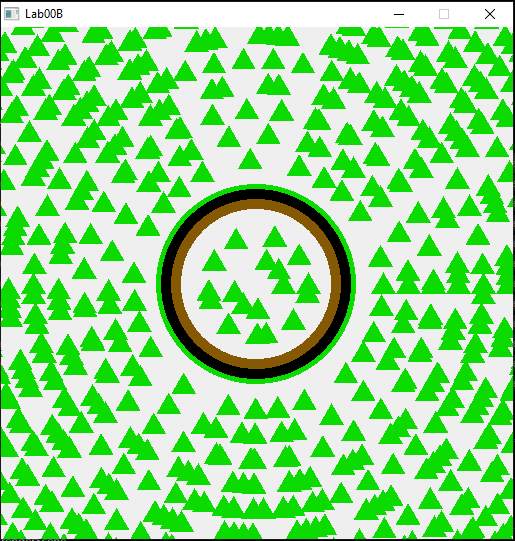
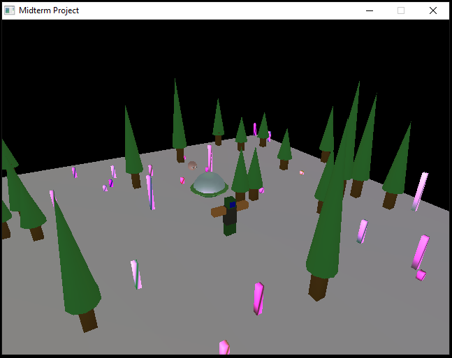

This is the first part of Lab 00. This lab is all about learning how to translate and create various shapes. As shown in the image, the shape created is a triforce of power from "The Legend of Zelda"

This is an image from the second part of Lab 00 where we were given the chance to create a race track using the primitives we knew how to create. For this part, I wanted to experiment with creating circles using triangular primates so I opted to create a circular race track.

This is the first assignment of the course where we write our hero's name using OpenGL primatives. My hero's name is Merry Chrysler (secretly Santa, but lately the paparazzi has been all up in his case).

This is the second assignment of the course where we create our hero using OpenGL primatives and have them explore our classes map. In this assignment we join Santa (or Merry Chrysler as his "secret" identity goes) as he explores the park and plays with the new "Christmas Bullets" his elves gave him!

This is side quest one which is an extra credit assignment where we have to make an entire 2D game (playable character, enemy(ies), conflict, etc.) using only OpenGL primatives and skills we learned from A02. My game is an epic battle between you and your tank and an alien invader set on destroying the world! Don't take too long to defeat the alien lest the blazing fires and the aliens bullets destroy you!

This is the third assignment of the course where we create our hero using OpenGL 3D primatives and have them explore a 3D world! Sadly, due to time constraints, I was not able to fully recreate Santa in all his 3D glory. However, the start that was achieved in this assignment is able to walk around and explore the nearby hills! In addition, there is another tiny camera looking over Santa in order to see his every step!

This is the fourth assignment of the course where we create actual lights for Santa to walk around and gaze at! There are two lights in this assignment, both of them being point lights. Each are a different color and add together quite nicely!

This is the midterm project for this course. I worked with Aiko and Doomguy and we created a park for our heros to walk around in! I was responsible for the lighting and shaders and I was able to get the shaders working, the lights are a tad off not showing up at all on the ground nor the trees. Despite hours of debugging with the rest of the team, no solution was able to be found. While we are happy with our results, there were many bugs and errors that we spent hours trying to fix but, sadly, did not have the time to successfully do so.

This is the fifth assignment of the course. The primary focus of the assignment was to use bezier curves to animate a new companion for our hero, our "mascot"! The mascot is animated going around our hero with a nice skybox added in the background to give us something to look at!

This is the sixth assignment of the course. The primary focus for this assignment was to implement a particle system in our scene to give our scene some pizzaz! In this particular instance of the particle system, there are five fountains and one rain cloud all spewing out snowflakes to bring some winter flair!

This is the seventh and final assignment of this course where we are given the freedom to make a basic 3D game while using flocking enemies and collision! For my short game we have our hero collecting his precious snowflakes while his enemies, the nasty South Pole Trolls try and stop him!


This is the final project for this course! For this project, I worked with Gavin Castaneda, Ruidi "Reed" Huang, and Steven Vannard. We decided we wanted to make a horror game. We decided upon a infinite hallway style of game where the enemy chases you! There is no winning, only death. You can only run as quickly as you can to avoid his red glow. If he gets too close your vision will be distorted as you inch closer and closer to death with each step! There is one additional ending that the player must find for themself! 😉